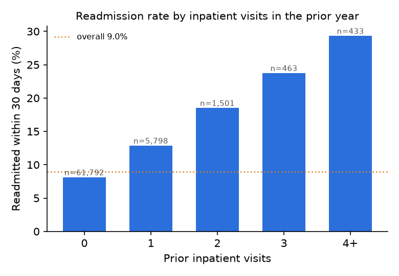
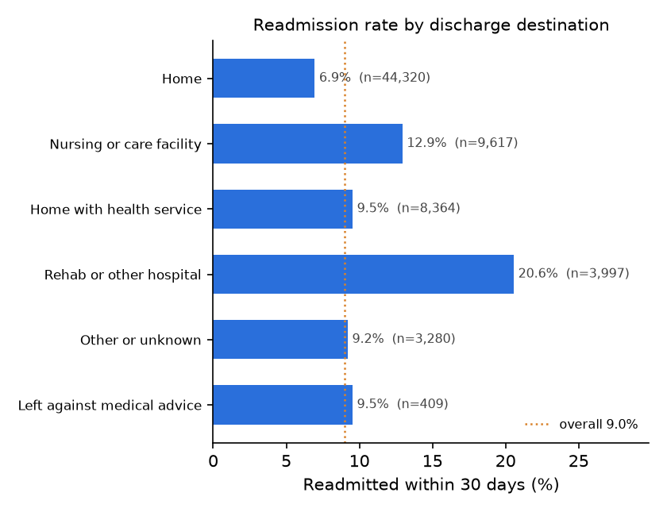
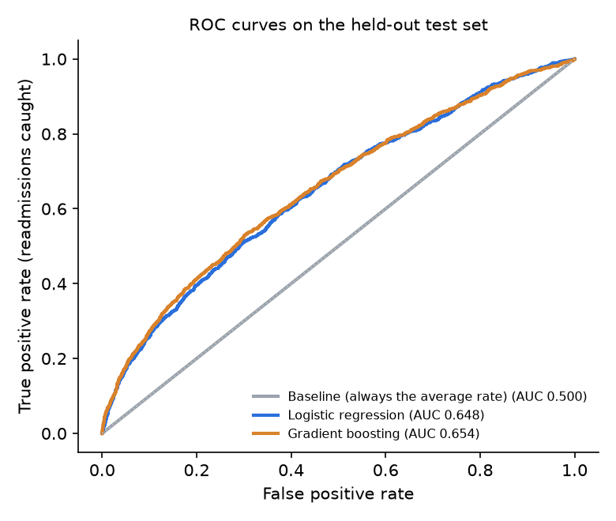
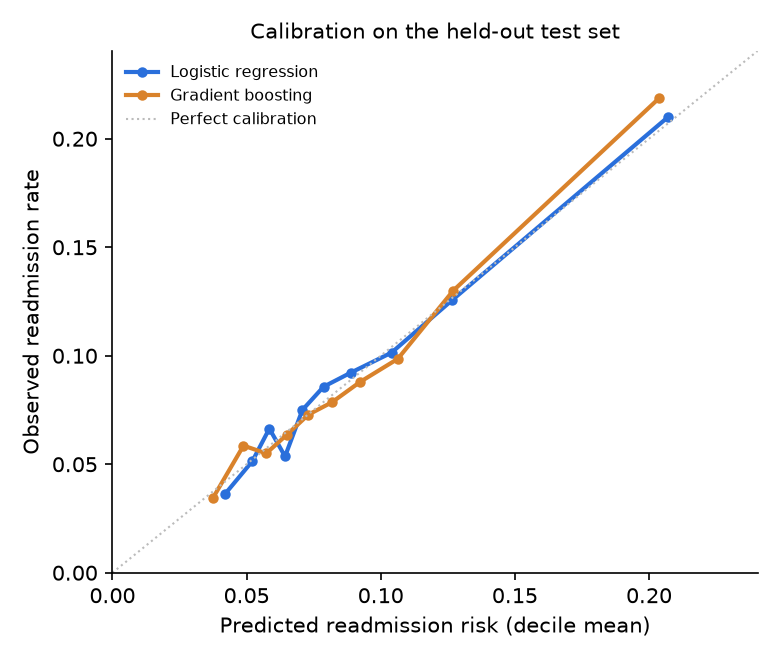

Results on 13,998 held-out patients
Data: Diabetes 130-US Hospitals 1999–2008 (UCI, CC BY 4.0). The model was chosen on 5-fold cross-validation over 55,989 training patients; the test set was used once.
What the data says

Patients with no inpatient stay in the prior year were readmitted 8.1% of the time; with 4 or more, 29.3%.

Model comparison
| Model | CV ROC-AUC (mean ± sd) | Test ROC-AUC | Test PR-AUC | Brier | Caught in top 10% |
|---|---|---|---|---|---|
| Baseline (always the average rate) | 0.500 ± 0.000 | 0.500 | 0.090 | 0.0817 | 10% |
| Logistic regression | 0.645 ± 0.004 | 0.648 | 0.169 | 0.0793 | 23% |
| Gradient boosting | 0.655 ± 0.006 | 0.654 | 0.186 | 0.0787 | 24% |
PR-AUC matters here because only 9.0% of patients are readmitted: an uninformed model scores 0.090. Logistic regression's strength was picked by cross-validation (C = 0.1).


Strongest signals
Logistic regression odds ratios: per standard deviation for numbers, per category relative to the average category.
| Feature | Level | Odds ratio |
|---|---|---|
| Discharge disposition id | 22: Discharged/transferred to another rehab fac including rehab units of a hospital . | 2.47 |
| Discharge disposition id | 23: Discharged/transferred to a long term care hospital. | 0.41 |
| Discharge disposition id | 25: Not Mapped | 0.46 |
| Discharge disposition id | 28: Discharged/transferred/referred to a psychiatric hospital of psychiatric distinct part unit of a hospital | 1.88 |
| Discharge disposition id | 5: Discharged/transferred to another type of inpatient care institution | 1.83 |
| Discharge disposition id | 1: Discharged to home | 0.56 |
| Discharge disposition id | 15: Discharged/transferred within this institution to Medicare approved swing bed | 1.66 |
| Admitting specialty | Orthopedics-Reconstructive | 0.68 |
| Second diagnosis | Neoplasms | 1.47 |
| Admission source id | 3: HMO Referral | 1.44 |
Does it work equally well for everyone?
Gradient boosting on the test set, by group (groups under 300 patients skipped).
| Group | n | Observed | Predicted | ROC-AUC | |
|---|---|---|---|---|---|
| age | 60-79 | 6,731 | 9.7% | 9.5% | 0.642 |
| age | 40-59 | 3,818 | 7.6% | 7.3% | 0.650 |
| age | 80+ | 2,570 | 10.2% | 10.7% | 0.639 |
| age | <40 | 879 | 6.3% | 6.6% | 0.727 |
| gender | Female | 7,507 | 8.8% | 9.0% | 0.658 |
| gender | Male | 6,491 | 9.1% | 8.8% | 0.650 |
| race | Caucasian | 10,522 | 9.1% | 9.1% | 0.647 |
| race | AfricanAmerican | 2,504 | 9.2% | 8.4% | 0.663 |
| race | Missing | 361 | 6.1% | 8.0% | 0.683 |
Risk calculator
A compact logistic regression on 13 inputs (test ROC-AUC 0.645), exported from scikit-learn to JSON and scored in JavaScript; tests check it matches scikit-learn to 12 decimal places.
How the data was cleaned
| Step | Rows left |
|---|---|
| raw encounters | 101,766 |
| drop unknown gender | 101,763 |
| drop expired / hospice discharges | 99,340 |
| keep first encounter per patient | 69,987 |
- '?' read as missing; lab results of 'None' kept as not measured, since whether a test was ordered is itself informative.
- Expired and hospice discharges removed: those patients cannot be readmitted.
- One encounter per patient (the first), so no patient sits in both training and test data.
- ICD-9 diagnosis codes grouped into 9 disease groups; specialties capped at the top 10.
- Dropped: weight (about 97% missing), payer code, identifiers, and constant columns (examide, citoglipton, glimepiride-pioglitazone).
Limits
Readmission is hard to predict from administrative records alone: the model ranks patients better than chance but misses many readmissions, and the data is from 1999–2008. Social factors, follow-up care and lab values beyond HbA1c and glucose aren't in the dataset.